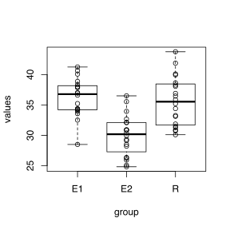
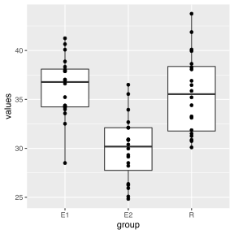
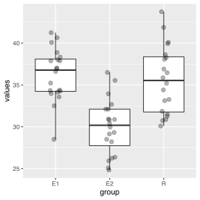
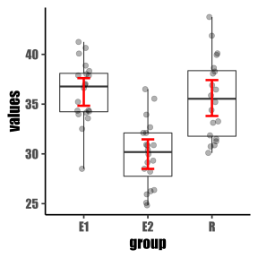

Скачаем тестовый файл.
Для этого надо перейти по ссылке и сохранить его вручную в нужную папку.
Однако это можно сделать и с помощью R. Для этого сначала сгенерируем имя временного файла и сохраним его в переменную tmp (или же вы можете прописать путь к папке и имя файла, если далее хотите с ним иметь дело), затем сохраним в него скачанный файл. После завершения работы скрипта временный файл будет удален, а если Вы сами указали путь и имя файла, тогда он останется.
tmp = tempfile() # создадим временный файл
tmp # имя этого файла## [1] "/var/folders/0k/1pnv43kn25vbnnlmpztddp5c0000gn/T//Rtmpo5FdTh/file3f9cfe2d698"# скачиваем файл по ссылке
download.file("https://github.com/lapotok/biochemstat2019/blob/master/data/iris.xlsx?raw=true", tmp)Т.е. с помощью данных команд мы скачали файл во временный файл с названием /var/folders/0k/1pnv43kn25vbnnlmpztddp5c0000gn/T//Rtmpo5FdTh/file3f9cfe2d698.
Если нам требуется открыть какой-то файл на компьютере, то нам нужно указать путь до него (тут инструкция). Вкратце, в R есть домашняя папка по умолчанию, путь к которой вы можете узнать с помощью функции getwd(). Чтобы открыть нужный файл Вам потребуется либо положить файл в эту папку и указать только название файла, либо прописать полный путь к файлу, например C:/User/username/folder/subfolder/filename.xlsx. Самый продвинутый способ работы с путями к файлам - это создать проект в RStudio и класть необходимые файлы (как файлы данных, так и далее генерируемые скрипты) в папку или подпапки проекта (более подробно об этом можно почитать здесь, здесь или здесь).
Теперь этот файл можем открыть. Форматов бывает много, однако одна из наиболее продвинутых библиотек rio позволяет открывать практически любые распространенные форматы.
library(rio)
suppressPackageStartupMessages(library(tidyverse))
suppressPackageStartupMessages(library(magrittr))
my_iris = import(tmp, format = "xlsx")
my_iris %>% str()## 'data.frame': 150 obs. of 5 variables:
## $ Sepal.Length: num 5.1 4.9 4.7 4.6 5 5.4 4.6 5 4.4 4.9 ...
## $ Sepal.Width : num 3.5 3 3.2 3.1 3.6 3.9 3.4 3.4 2.9 3.1 ...
## $ Petal.Length: num 1.4 1.4 1.3 1.5 1.4 1.7 1.4 1.5 1.4 1.5 ...
## $ Petal.Width : num 0.2 0.2 0.2 0.2 0.2 0.4 0.3 0.2 0.2 0.1 ...
## $ Species : chr "setosa" "setosa" "setosa" "setosa" ...my_iris$Species %>% unique()## [1] "setosa" "versicolor" "virginica"Видим, что файл открылся правильно, т.к.
num (а не текстовый тип chr и не фактор factor)Теперь для разнообразия откроем файл с ошибками.
# так можно скачивать файлы из интернета во временный файл, чтобы потом открывать
tmp = tempfile() # генерируем название временного файла
download.file("https://github.com/lapotok/biochemstat2019/blob/master/data/bad_data_example.xlsx?raw=true", tmp)
bad = import(tmp, format = "xlsx")
bad %>% str() # смотрим на типы данных разных переменных## 'data.frame': 38 obs. of 5 variables:
## $ ID : chr "PL01.It1" "PL01.It2" "PL01.It3" "PL01.It4" ...
## $ Weight : chr "44" "99.2" "22" "67" ...
## $ Species : chr "Genus1 species1" "Genus1 species1" "Genus1 species1" "Genus1 species2" ...
## $ Num ticks: num 203 0 70 0 197 0 125 229 138 218 ...
## $ Пол : chr "F" "M" "f" "m" ...bad$Species %>% unique() # все ли названия правильные? нет ничего лишнего?## [1] "Genus1 species1" "Genus1 species2" "Genus1 sp"
## [4] "Genus1 sp." "Genus1 spp." "NA"
## [7] NA "Genus2 hz" "?"
## [10] "Genus2 ?" "Na" "hz"
## [13] "Genus2 species1 ?" "na" "Genus2 species1"bad$"Пол" %>% unique() # должно быть 2 пола или пропуск в данных, так ли это?## [1] "F" "M" "f" "m" NAКакие могут быть ошибки в данных? В файле, который мы рассматриваем в качестве антипримера есть следующие ошибки
Weight и как следствие вся переменная определяется как строковая, а не численнаяR в формате регулярных выражений, что заменять на NA без кавычек - специальное обозначение для пропущенных данных)bad$`Num ticks`)Какие-то из ошибок можно исправить уже на этапе подготовки данных (см. рекомендации). Идеальная форма представления данных воплощается в концепте “tidy data”.
Учимся исправлять ошибки, которые мы уже научились находить.
library(naniar)
good =
bad %>%
mutate(Weight = str_replace(Weight, ",", ".")) %>% # исправляем ошибку: заменяем , на .
mutate(Weight = as.numeric(Weight)) %>% # теперь изменяем тип переменной на числовой
rename(Gender=`Пол`, Num_ticks=`Num ticks`) %>% # переименовываем переменные, чтобы дальше было удобнее
replace_with_na_all(~ str_detect(.x, regex("(^na$)|(.*hz.*)|(.*\\?.*)", ignore_case = T))) %>% # заменяем на NA (см. дальше)
mutate(Gender = toupper(Gender)) # для унификации заменяем все буквы на большие
# а теперь как?
good %>% str()## Classes 'tbl_df', 'tbl' and 'data.frame': 38 obs. of 5 variables:
## $ ID : chr "PL01.It1" "PL01.It2" "PL01.It3" "PL01.It4" ...
## $ Weight : num 44 99.2 22 67 91.8 95 13 51.1 57 97 ...
## $ Species : chr "Genus1 species1" "Genus1 species1" "Genus1 species1" "Genus1 species2" ...
## $ Num_ticks: num 203 0 70 0 197 0 125 229 138 218 ...
## $ Gender : chr "F" "M" "F" "M" ...good$Species %>% unique()## [1] "Genus1 species1" "Genus1 species2" "Genus1 sp" "Genus1 sp."
## [5] "Genus1 spp." NA "Genus2 species1"good$Gender %>% unique()## [1] "F" "M" NAЗдесь стоит отдельно остановиться на выражении regex("(^na$)|(.*hz.*)|(.*\\?.*)", ignore_case = T). Речь идет об использовании регулярных выражений. Это способ указывать критерий для поиска или замен в строках. Простейший житейский пример регулярного выражения (правда, синтаксис там не очень правильный, зато понятный) - это когда мы выбираем файлы Excel выражением *.xls(x).
Здесь я приведу один пример работы с ними: проверяем адреса электронной почты на правильность (это простенький пример, не претендующий на абсолютную правильность).
# поиск по паттерну
mails = c("good@mail1.ru",
"good@mail2.ru",
"bad@mail@ru",
"another*bad@mail.ru") # список адресов
mail_regex = "^[A-Za-z0-9.+_-]+@[A-Za-z0-9.+_-]+\\.[A-Za-z0-9.+_-]{2,}$" # регулярное выражение
str_detect(mails, mail_regex) # проверяем адреса на соответствие выражению## [1] TRUE TRUE FALSE FALSEРазберем по частям
^ в начале обозначает, что мы ищем с начала строки включительно, а $ - что искомый элемент заканчивается концом строки; т.е. в итоге мы хотим чтобы строка полностью соответствовала шаблону, а не ее какая-то часть;[A-Za-z0-9.+_-] - это любой из символов в скобках, причем все большие буквы задаются диапазоном A-Z; аналогично задаются все маленькие и все цифры;[A-Za-z0-9.+_-]+ - это вышеупомянутые символы, которые повторяются 1 и более раз (это указывается символом +; если может быть 0 и более раз, то используем символ *; чтобы в явном виде указать диапазон используем синтаксис {min,max});. вне скобок обозначает любой символ, поэтому для обозначения точки нужно использовать сочетание \\..Здесь я не буду подробнее останавливаться на регулярных выражениях, Вы можете подробнее прочитать про это по ссылкам далее [1, 2, 3].
Наиболее удобный вид для работы с большинством данных - data.frame (или ее современный аналог tibble, с которым мы далее по умолчанию будем работать). Когда мы импортируем данные из файлов Excel или CSV, это как раз тот формат, который импортированные данные будут иметь по умолчанию. Рассмотрим пример данных и возможные способы их преобразования.
# структура таблицы
my_iris %>% str()## 'data.frame': 150 obs. of 5 variables:
## $ Sepal.Length: num 5.1 4.9 4.7 4.6 5 5.4 4.6 5 4.4 4.9 ...
## $ Sepal.Width : num 3.5 3 3.2 3.1 3.6 3.9 3.4 3.4 2.9 3.1 ...
## $ Petal.Length: num 1.4 1.4 1.3 1.5 1.4 1.7 1.4 1.5 1.4 1.5 ...
## $ Petal.Width : num 0.2 0.2 0.2 0.2 0.2 0.4 0.3 0.2 0.2 0.1 ...
## $ Species : chr "setosa" "setosa" "setosa" "setosa" ...# фильтрация строк таблицы по какому-то критерию
my_iris %>%
filter(Sepal.Width < 2.4)## Sepal.Length Sepal.Width Petal.Length Petal.Width Species
## 1 4.5 2.3 1.3 0.3 setosa
## 2 5.5 2.3 4.0 1.3 versicolor
## 3 5.0 2.0 3.5 1.0 versicolor
## 4 6.0 2.2 4.0 1.0 versicolor
## 5 6.2 2.2 4.5 1.5 versicolor
## 6 6.3 2.3 4.4 1.3 versicolor
## 7 5.0 2.3 3.3 1.0 versicolor
## 8 6.0 2.2 5.0 1.5 virginicamy_iris %>%
filter(Species != "versicolor" & Sepal.Width < 2.4)## Sepal.Length Sepal.Width Petal.Length Petal.Width Species
## 1 4.5 2.3 1.3 0.3 setosa
## 2 6.0 2.2 5.0 1.5 virginica# группировка строк по какому-то признаку и анализ внутри каждой группы
my_iris %>% as_tibble()## # A tibble: 150 x 5
## Sepal.Length Sepal.Width Petal.Length Petal.Width Species
## <dbl> <dbl> <dbl> <dbl> <chr>
## 1 5.1 3.5 1.4 0.2 setosa
## 2 4.9 3 1.4 0.2 setosa
## 3 4.7 3.2 1.3 0.2 setosa
## 4 4.6 3.1 1.5 0.2 setosa
## 5 5 3.6 1.4 0.2 setosa
## 6 5.4 3.9 1.7 0.4 setosa
## 7 4.6 3.4 1.4 0.3 setosa
## 8 5 3.4 1.5 0.2 setosa
## 9 4.4 2.9 1.4 0.2 setosa
## 10 4.9 3.1 1.5 0.1 setosa
## # … with 140 more rowsmy_iris %>%
group_by(Species) # вроде ничего не поменялось, кроме служебной информации## # A tibble: 150 x 5
## # Groups: Species [3]
## Sepal.Length Sepal.Width Petal.Length Petal.Width Species
## * <dbl> <dbl> <dbl> <dbl> <chr>
## 1 5.1 3.5 1.4 0.2 setosa
## 2 4.9 3 1.4 0.2 setosa
## 3 4.7 3.2 1.3 0.2 setosa
## 4 4.6 3.1 1.5 0.2 setosa
## 5 5 3.6 1.4 0.2 setosa
## 6 5.4 3.9 1.7 0.4 setosa
## 7 4.6 3.4 1.4 0.3 setosa
## 8 5 3.4 1.5 0.2 setosa
## 9 4.4 2.9 1.4 0.2 setosa
## 10 4.9 3.1 1.5 0.1 setosa
## # … with 140 more rowsmy_iris %>%
group_by(Species) %>%
nest() # вот как R теперь видит таблицу: набор подтаблиц для каждой группы## # A tibble: 3 x 2
## # Groups: Species [3]
## Species data
## <chr> <list<df[,4]>>
## 1 setosa [50 × 4]
## 2 versicolor [50 × 4]
## 3 virginica [50 × 4]my_iris %>%
group_by(Species) %>%
nest() %>%
filter(Species == "setosa") %>%
.[["data"]] %>% .[[1]] # вот что лежит в одной такой подтабличке для группы setosa## # A tibble: 50 x 4
## Sepal.Length Sepal.Width Petal.Length Petal.Width
## <dbl> <dbl> <dbl> <dbl>
## 1 5.1 3.5 1.4 0.2
## 2 4.9 3 1.4 0.2
## 3 4.7 3.2 1.3 0.2
## 4 4.6 3.1 1.5 0.2
## 5 5 3.6 1.4 0.2
## 6 5.4 3.9 1.7 0.4
## 7 4.6 3.4 1.4 0.3
## 8 5 3.4 1.5 0.2
## 9 4.4 2.9 1.4 0.2
## 10 4.9 3.1 1.5 0.1
## # … with 40 more rowsmy_iris %>%
group_by(Species) %>%
summarise(n = n(), # число строк в каждой подгруппе
mean_petal.length = mean(Petal.Length)) # вычисляем что-то для каждой подгруппы## # A tibble: 3 x 3
## Species n mean_petal.length
## <chr> <int> <dbl>
## 1 setosa 50 1.46
## 2 versicolor 50 4.26
## 3 virginica 50 5.55Дополнительные примеры по манипуляциям с данными Вы можете посмотреть здесь и здесь.
Предположим, что у нас есть три группы мышей: R, E1, E2 (контроль и две опытные, после обработки разными лекарствами). Нам нужно каким-то образом организовать имеющиеся данные, чтобы их удобно было обрабатывать. Какие есть варианты?
# просто 3 объекта
R = rnorm(20, 36.3, 3.4)
E1 = rnorm(20, 36.3, 3.4)
E2 = rnorm(20, 30.0, 3.4)
# список из 3х объектов
mice_list = list(R=R, E1=E1, E2=E2)
mice_list## $R
## [1] 41.87651 30.74534 30.09848 39.94321 31.85980 38.63277 33.26380
## [8] 35.86958 36.46263 35.20975 30.86917 36.90208 31.51000 33.12432
## [15] 34.40428 38.27473 43.75501 40.09789 31.26536 38.06757
##
## $E1
## [1] 34.26659 33.97678 40.07962 34.38505 32.51456 36.61213 34.33880
## [8] 38.87437 40.64761 38.01679 36.94065 37.03046 34.14591 35.23004
## [15] 28.49982 33.57472 38.33148 41.24790 37.88635 37.88125
##
## $E2
## [1] 32.67755 32.10432 29.97181 25.08021 30.84632 24.83149 30.87612
## [8] 30.92331 30.39442 29.32182 26.36443 28.50394 29.14228 33.94375
## [15] 25.93650 36.50195 32.10984 28.21392 26.24877 35.54759# таблица (широкий формат)
mice_tibble_wide = tibble(R=R, E1=E1, E2=E2)
mice_tibble_wide## # A tibble: 20 x 3
## R E1 E2
## <dbl> <dbl> <dbl>
## 1 41.9 34.3 32.7
## 2 30.7 34.0 32.1
## 3 30.1 40.1 30.0
## 4 39.9 34.4 25.1
## 5 31.9 32.5 30.8
## 6 38.6 36.6 24.8
## 7 33.3 34.3 30.9
## 8 35.9 38.9 30.9
## 9 36.5 40.6 30.4
## 10 35.2 38.0 29.3
## 11 30.9 36.9 26.4
## 12 36.9 37.0 28.5
## 13 31.5 34.1 29.1
## 14 33.1 35.2 33.9
## 15 34.4 28.5 25.9
## 16 38.3 33.6 36.5
## 17 43.8 38.3 32.1
## 18 40.1 41.2 28.2
## 19 31.3 37.9 26.2
## 20 38.1 37.9 35.5# таблица (длинный формат)
mice_tibble_long = tibble(
group = rep(c("R", "E1", "E2"), each = 20),
values = c(R, E1, E2)
)
mice_tibble_long## # A tibble: 60 x 2
## group values
## <chr> <dbl>
## 1 R 41.9
## 2 R 30.7
## 3 R 30.1
## 4 R 39.9
## 5 R 31.9
## 6 R 38.6
## 7 R 33.3
## 8 R 35.9
## 9 R 36.5
## 10 R 35.2
## # … with 50 more rowsС отдельными объектами для групп не понятно что делать, как и со списком. Таблица в широком формате чуть более функциональна, однако ее структура нарушает базовое правило таблицы данных (строки-наблюдения и колонки-признаки, т.к. разные наблюдения не только в разных строках, но и в разных колонках). В R можно легко преобразовывать таблицы из формата wide в long и наоборот.
mice_tibble_wide## # A tibble: 20 x 3
## R E1 E2
## <dbl> <dbl> <dbl>
## 1 41.9 34.3 32.7
## 2 30.7 34.0 32.1
## 3 30.1 40.1 30.0
## 4 39.9 34.4 25.1
## 5 31.9 32.5 30.8
## 6 38.6 36.6 24.8
## 7 33.3 34.3 30.9
## 8 35.9 38.9 30.9
## 9 36.5 40.6 30.4
## 10 35.2 38.0 29.3
## 11 30.9 36.9 26.4
## 12 36.9 37.0 28.5
## 13 31.5 34.1 29.1
## 14 33.1 35.2 33.9
## 15 34.4 28.5 25.9
## 16 38.3 33.6 36.5
## 17 43.8 38.3 32.1
## 18 40.1 41.2 28.2
## 19 31.3 37.9 26.2
## 20 38.1 37.9 35.5mice_tibble_wide %>%
pivot_longer(everything(), # я указал все колонки, а можно брать только часть
names_to = "group", # имя новой колонки с названиями групп
values_to = "values") # имя новой колонки со значениями признака## # A tibble: 60 x 2
## group values
## <chr> <dbl>
## 1 R 41.9
## 2 E1 34.3
## 3 E2 32.7
## 4 R 30.7
## 5 E1 34.0
## 6 E2 32.1
## 7 R 30.1
## 8 E1 40.1
## 9 E2 30.0
## 10 R 39.9
## # … with 50 more rowsmice_tibble_long # каждая строка - наблюдение## # A tibble: 60 x 2
## group values
## <chr> <dbl>
## 1 R 41.9
## 2 R 30.7
## 3 R 30.1
## 4 R 39.9
## 5 R 31.9
## 6 R 38.6
## 7 R 33.3
## 8 R 35.9
## 9 R 36.5
## 10 R 35.2
## # … with 50 more rowsmice_tibble_long %>%
pivot_wider(names_from = group, # колонка, в которой хранится принадлежность наблюдения к группе
values_from = values, # колонка со значениями признака
values_fn = list(values = list)) %>%
unnest(cols = c(R, E1, E2))## # A tibble: 20 x 3
## R E1 E2
## <dbl> <dbl> <dbl>
## 1 41.9 34.3 32.7
## 2 30.7 34.0 32.1
## 3 30.1 40.1 30.0
## 4 39.9 34.4 25.1
## 5 31.9 32.5 30.8
## 6 38.6 36.6 24.8
## 7 33.3 34.3 30.9
## 8 35.9 38.9 30.9
## 9 36.5 40.6 30.4
## 10 35.2 38.0 29.3
## 11 30.9 36.9 26.4
## 12 36.9 37.0 28.5
## 13 31.5 34.1 29.1
## 14 33.1 35.2 33.9
## 15 34.4 28.5 25.9
## 16 38.3 33.6 36.5
## 17 43.8 38.3 32.1
## 18 40.1 41.2 28.2
## 19 31.3 37.9 26.2
## 20 38.1 37.9 35.5Первый шаг к пониманию данных - визуализация данных. В R есть 2 принципиально разных системы построения графиков: base R plots и ggplot. Первая - более быстрая, но древняя и убогая, а вторая - более современная, настраиваемая, но немного более сложная.
# base R plot
boxplot(
values ~ group, # формула, обозначающая значения ~ группирующая_переменная
mice_tibble_long # данные
)
points(
values ~ as.factor(group), # для построения графика группирующая переменная должна иметь численное представление
mice_tibble_long
)
# ggplot
ggplot(
data = mice_tibble_long, # таблица с данными
mapping = aes(x = group, y = values) # что по X, что по Y
) + # символ "+" используется для сборки графика из частей
geom_boxplot() + # слой боксплота
geom_point() # слой точек поверх
Графики ggplot более стильные и настраиваемые. Для примера изменим стиль графика и добавим к нему доверительные интервалы для групповых средних.
# создаем вспомогательную таблицу с данными для доверительных интервалов
mice_stats =
mice_tibble_long %>%
group_by(group) %>%
summarise(
n = n(),
mean = mean(values),
sd = sd(values)
)
mice_stats## # A tibble: 3 x 4
## group n mean sd
## <chr> <int> <dbl> <dbl>
## 1 E1 20 36.2 3.10
## 2 E2 20 30.0 3.31
## 3 R 20 35.6 4.03g = # график можно сохранить в объект
ggplot(mice_tibble_long, aes(x = group, y = values)) +
geom_boxplot(outlier.shape = NA) + # не показываем "выбросы"
geom_point(position = position_jitter(.1), # чуток "рассеиваем" точки
fill = "black",
alpha = .3, size = 2.5)
g # вызывая объект с графиком мы рисуем график
g2 =
g + # к уже готовому объекту можно добавить новые слои и настройки
geom_errorbar(
data = mice_stats, # доверительные интервалы строим из данных в отдельной табличке
mapping = aes(x = group,
y = NULL, # чтобы не было ошибки
ymin = mean - 2 * sd / sqrt(n), # считаем границы доверительного интервала
ymax = mean + 2 * sd / sqrt(n)
),
size = 1.2, width = .2, color = "red") + # настройки стиля
theme_classic(base_size = 17, base_family = "Impact") # меняем тему и шрифт
g2
В R вы можете иметь полный контроль над тем, что за файлы открывать и в каком виде что сохранять.
Итак, сохраняем таблицу
# куда сохраняем?
# в текущий путь
getwd()
export(good, "good.xlsx") # xlsx
export(good, "good.csv") # csv
export(good, "good", format = "xlsx") # xlsx
# в другое место
export(good, "D:/custom_folder/good.xlsx")Еще можем сохранить графики
# любой формат к Вашим услугам!
ggsave("my_plot.png", g, width = 4, height = 4)
ggsave("my_plot.pdf", g, width = 4, height = 4)
ggsave("my_plot.tiff", g, width = 4, height = 4)
ggsave("my_plot.svg", g, width = 4, height = 4)
install.packages("export")
library(export)
graph2ppt(g2, file="ggplot2_plot.pptx", width=4, height=4)И наконец, можно сохранять уже хранящиеся в памяти объекты
# можем выбрать сами, какие объекты сохранять (это предпочтительно!)
save(good, bad, g, g2, file = "selected_objects.RData")
# или можно автоматически все объекты сохранить
ls(all.names = TRUE)
save(list = ls(all.names = TRUE), file = "all_objects.RData")